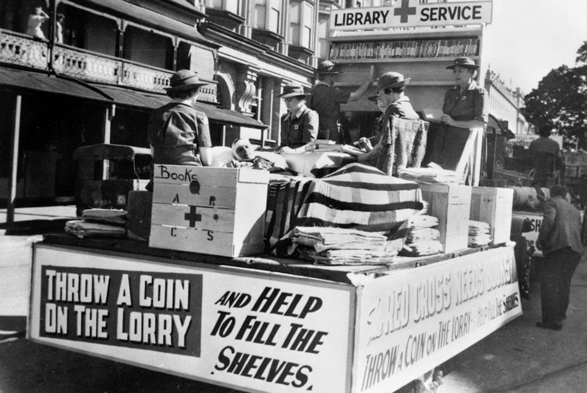
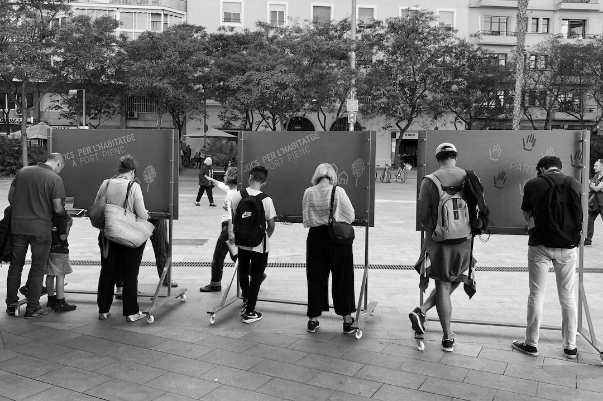
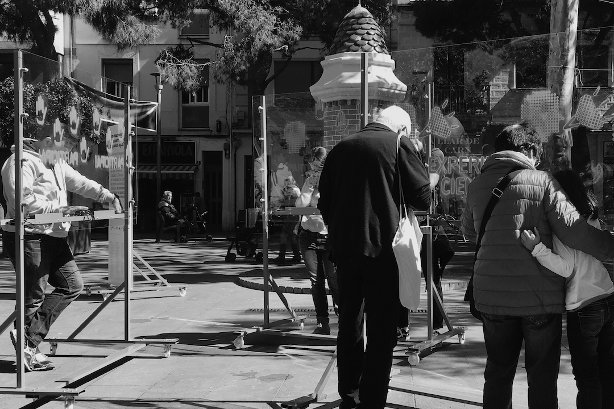
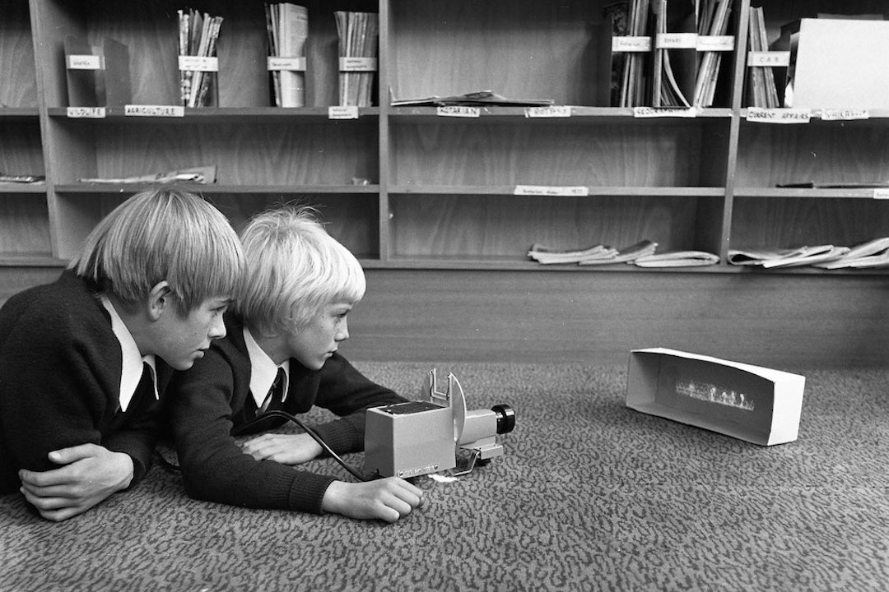

November 28th, 2019
Project

© Public Domain | Red Cross Library Service. Brisbane, 1944
Publication of «Citizen Science in Libraries», a crowdsourced toolkit for and by librarians and citizens. Librarians proposed ten multidisciplinary citizen science projects to perform in libraries with library-goers within the specific context of each library. This toolkit was curated in co-creation sessions in the «Citizen Science Laboratory» through workshops facilitated by the members of OpenSystems in order to build a citizens science community around Barcelona libraries.
October 1st, 2019
Project

© OpenSystems | Games for Housing. Fort Pienc
«Citizen Science in Action» aimed to co-create a citizen science experiment focused on a social concern shared by the community around libraries, for and by library-goers, in three Barcelona municipalities (Granollers, Olesa de Montserrat and Fort Pienc). From this collaborative process emerged the shared concern of access to housing. All the participants formulated and conceptualized an intervention in the public space to collect evidence to answer different research questions. The result was «Jocs per l’Habitatge» («Games for Housing»), an intervention in public spaces which consisted in four days of data collection about different dilemmas that citizens face when citizens and policy-makers intervene in the housing market.

© OpenSystems | La Torrassa, L'Hospitalet de Llobregat
«Aigua de Barri» («Neighborhood Water») was a project that consisted of a series of workshops facilitated by OpenSystems members in cooperation with Ítaca, an organization from L’Hospitalet de Llobregat dedicated to out-of-school education for children and young people. The main objective of the project was to perform citizen science activities, as well as to organize a final performance in the public space using social dilemmas and game theory to puzzle over the use of basic resources like water. The project was funded by Fundació Agbar.
© Thomas Vilhelm | Biennal Ciutat i Ciencia
Ephemeral collective research action that aims to understand the interactions occurring in public spaces from a gender perspective. Citizen Social Lab collects data to better understand diverse human interactions in urban contexts in which a given conflict makes us face a social dilemma. This project allows us to research individual conflicts in situations of public violence. «Consciencies» was designed within the framework of the Biennal Ciutat i Ciència, a festival organized by the City of Barcelona, and performed again in the citizen science festival Calidoscopi by OpenSystems, Nus and the feminist students collective of Elisava.

© Tasmanian Archive | Teaching Aids Centre, 1951 - 1973
Participation in «STEM4Youth», an H2020 project that aims to promote STEM education through key scientific challenges and to enhance its impact on our life and career perspectives. The project introduced citizen science in schools in a radical manner by performing collective and participatory experiments in Barcelona, Polonia and Greece. These experiments studied public concerns such as gender inequalities, air quality or water pollution, which emerged from co-design sessions with students. This research is performed by means of behavioural experiments, game theory and using Citizen Social Lab, a participatory platform to perform collective experiments in the wild. This project has received funding from the European Union’s Horizon 2020 research and innovation programme under grant agreement No. 710577.